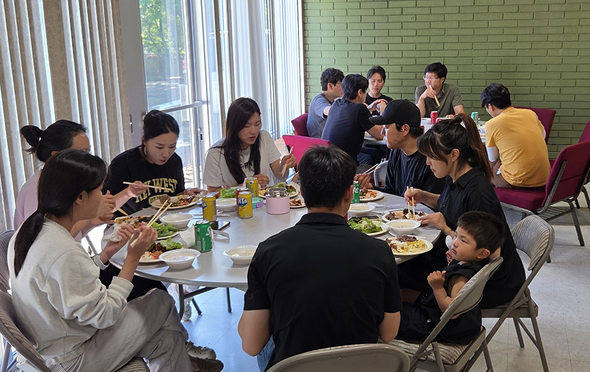
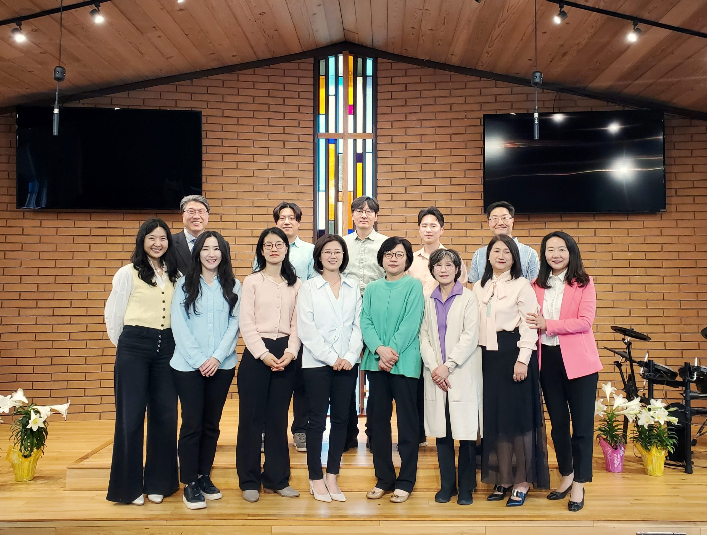
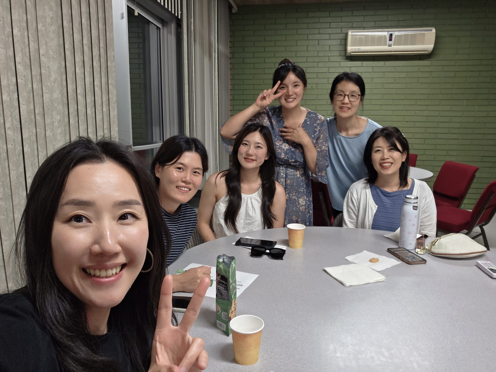
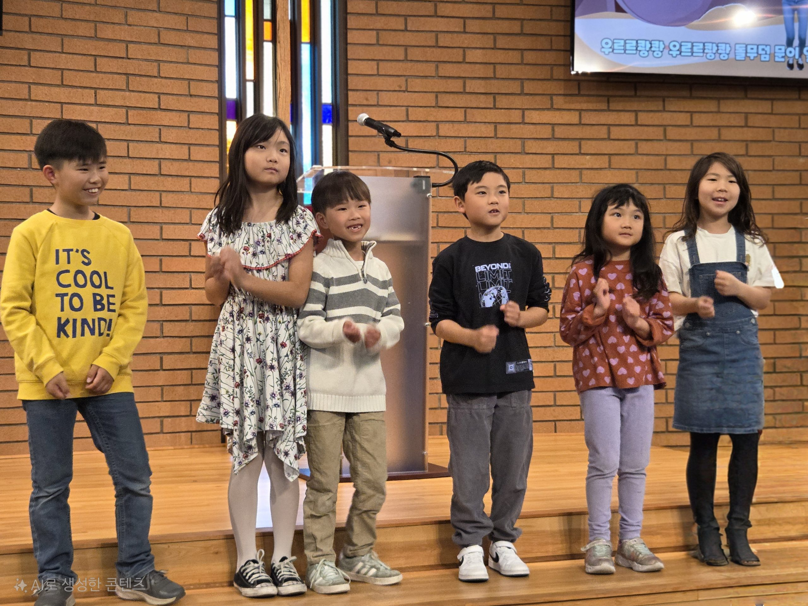
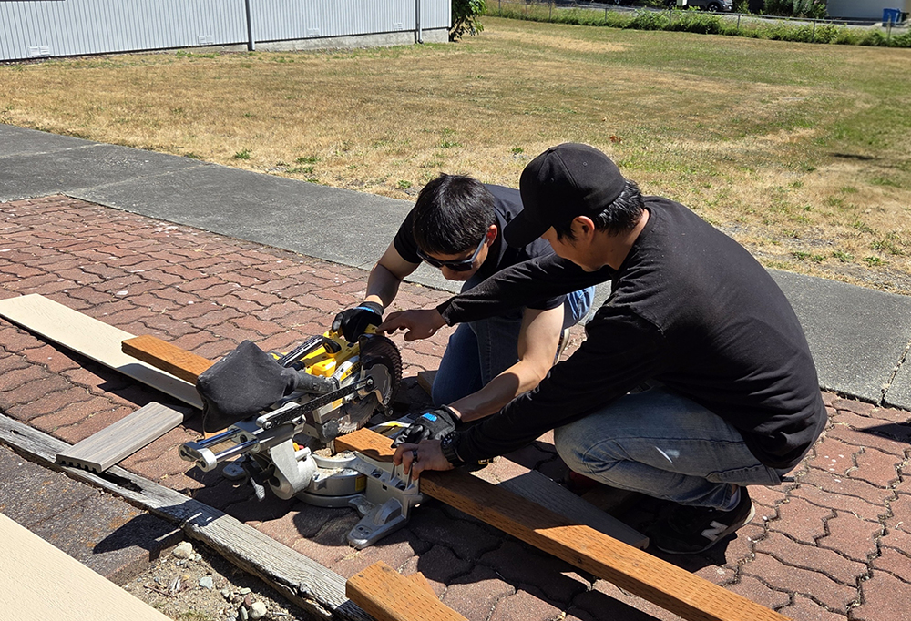

시애틀 시온장로교회 · 주일 오전 10시 45분.
처음 오시는 분도 편안하게, 예배가 끝나면 따뜻한 교제가 있습니다.





“시애틀에 일자리를 잡아서 아내와 함께 다닐 교회를 찾았어요. 자유롭고 화기애애한 분위기가 너무 좋아서 등록했어요.”
“이곳에서 말씀을 듣고, 찬양을 드리고, 신앙의 좋은 선배님들의 삶의 모습을 보며 배우며 신앙생활해서 참 좋아요.”
“정말 사람들이 마음 문이 열린 교회 같아요! 누구 할 것 없이 너무 따뜻하고 서로 안아주는 사랑하는 공동체 같아요!”
“시온장로교회 추천해드립니다! 예배와 커뮤니티가 너무 좋아서 여기로 정착했습니다. 환영합니다!”
“하나님이 사랑하시는 교회! 열정 넘치는 목사님과 사랑 많은 성도들이 하나님 나라 확장을 위해 힘쓰는 교회, 시온장로교회!”
처음이라 어색할 일이 없도록, 도착부터 미리 한번 걸어볼게요.
교회 주차장에 편히 대시면 돼요. 입구에서 맞아드릴게요.
10시 45분 예배. 처음이셔도 그냥 앉아 계셔도 괜찮아요.
예배 시간 동안 주일학교에서 아이들을 돌봐 드려요.
예배 후엔 따뜻한 교제. 편한 만큼만 머무시면 돼요.
17920 Meridian Ave N, Shoreline, WA 98133
구글 지도에서 보기 →
PayPal로 안전하게 헌금하실 수 있습니다.
결제는 PayPal의 보안 페이지에서 진행되며, 어떠한 개인 정보(이름, 카드번호, 주소, 연락처 등)도 교회 홈페이지에 저장되지 않습니다.
시애틀 하늘처럼 마음에도 날씨가 있죠.
지금의 마음을 고르면, 그 마음에 어울리는 말씀을 건네드려요.
저자: 이영래 목사
평신도 리더들을 위한 소그룹 성경공부 교재